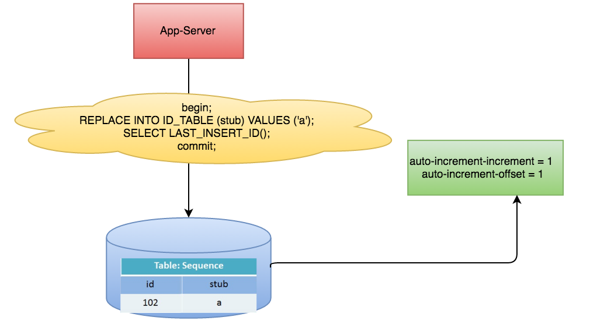

数据库定义生成主键ID表，利用ID自增
MySQL举例，利用给字段设置auto_increment_increment和auto_increment_offset来保证ID自增，每次业务使用下列SQL读写MySQL得到ID号。

优点 非常简单，利用现有数据库系统的功能实现，成本小，有DBA专业维护。ID号单调自增，可以实现一些对ID有特殊要求的业务。
缺点 强依赖DB，当DB异常时整个系统不可用，属于致命问题。配置主从复制可以尽可能的增加可用性，但是数据一致性在特殊情况下难以保证。主从切换时的不一致可能会导致重复发号。ID发号性能瓶颈限制在单台MySQL的读写性能。
数据库性能跟高提升方案
在分布式系统中我们可以多部署几台机器，每台机器设置不同的初始值，且步长和机器数相等-不同初始值，相同步长
如：有两台机器，设置步长step为2
设置步长step为2，
TicketServer1的初始值为1（1，3，5，7，9，11…）
TicketServer2的初始值为2（2，4，6，8，10…）
TicketServer1从1开始发号，TicketServer2从2开始发号，两台机器每次发号之后都递增2,假设我们要部署N台机器，步长需设置为N，每台的初始值依次为0,1,2…N-1
如：三台服务器 设置步长step为3
TicketServer1的初始值为1（1，4，7…）
TicketServer2的初始值为2（2，5，8…）
TicketServer3的初始值为3（3，6，8…）
这种架构貌似能够满足性能的需求，但有以下几个缺点：
系统水平扩展比较困难，比如定义好了步长和机器台数之后，如果要添加机器该怎么做？假设现在只有一台机器发号是1,2,3,4,5（步长是1），这个时候需要扩容机器一台。可以这样做：把第二台机器的初始值设置得比第一台超过很多，比如14（假设在扩容时间之内第一台不可能发到14），同时设置步长为2，那么这台机器下发的号码都是14以后的偶数。然后摘掉第一台，把ID值保留为奇数，比如7，然后修改第一台的步长为2。让它符合我们定义的号段标准，对于这个例子来说就是让第一台以后只能产生奇数。扩容方案看起来复杂吗？貌似还好，现在想象一下如果我们线上有100台机器，这个时候要扩容该怎么做？简直是噩梦。所以系统水平扩展方案复杂难以实现。
- ID没有了单调递增的特性，只能趋势递增，这个缺点对于一般业务需求不是很重要，可以容忍。
- 数据库压力还是很大，每次获取ID都得读写一次数据库，只能靠堆机器来提高性能。
- 另外一种Leaf-segment